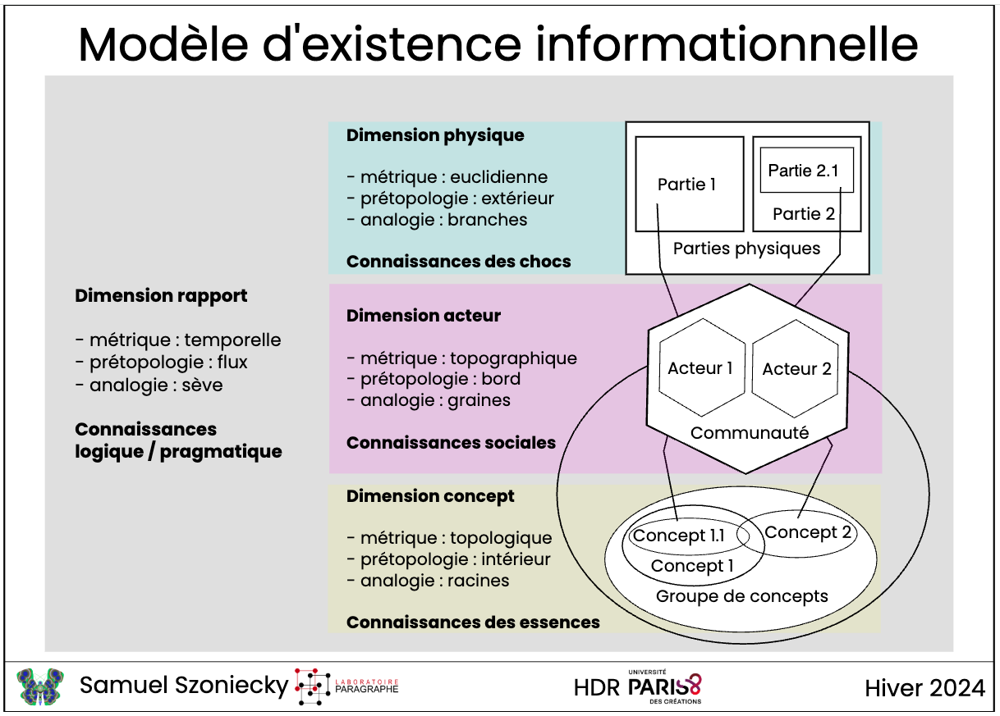
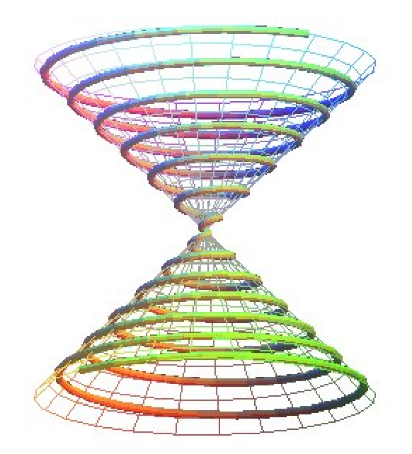

![]()
Article pour : Ontologies et humanités numériques
Le Tournant Ontologique dans les Humanités Numériques
Introduction
Dans les humanités numériques et plus généralement dans les sciences humaines et sociales, la modélisation des objets d’études avec des ontologies informatiques se pratique depuis plus de quarante ans (Gruber, 1995) et les réflexions sur la formalisation des sciences humaines à partir de modèles mathématiques depuis bien plus longtemps encore (Petitot, 1978). Dans ce contexte, le défi n’est pas principalement technique mais épistémologique (Rygiel, 2026). D’autant plus à l’ère de l’intelligence artificielle générative, des « Larges Languages Models » (LLM) et des « Agents Discursifs Artificiels » (ADA) (Lakel, n.d.) qui font évoluer nos pratiques scientifiques et nous font nous questionner sur les fondements théoriques de celles-ci. C’est pour alimenter les débats sur ces questions épistémologiques que nous souhaitons examiner dans cet article la thèse selon laquelle un « tournant ontologique » s’opère dans les humanités numériques comme ce qui s’observe dans l’anthropologie contemporaine (Revue du MAUSS 2025/1 (n° 65), n.d.).
Comme le rappelle l’analyse généalogique de (Costa, 2026), des figures fondatrices de la sociologie et de l’anthropologie — d’Émile Durkheim à Philippe Descola, en passant par Marcel Mauss, Claude Lévi-Strauss et Maurice Godelier — ont dû progressivement admettre que la constitution des rapports sociaux ne pouvait s’accomplir sans la médiation des rapports collectifs à l’environnement et à la nature. Au sein de cette trajectoire, la philosophie des territorialités développée par Gilles Deleuze et Félix Guattari dans Mille plateaux s’est affirmée comme un jalon fondamental pour penser des agencements qui dépassent les frontières de l’humain. Issue des recherches de Latour en science studies et de la théorie de l’acteur-réseau, cette approche repose sur un principe de symétrie généralisée. Ce principe postule qu’il n’existe pas de frontière étanche entre la nature et la culture, ni de séparation absolue entre les sociétés occidentales « modernes » et les sociétés « non-modernes ». Pour comprendre la science ou la technique, l’anthropologue symétrique n’observe pas une société construisant passivement la nature ; il fait face à des « imbroglios de nature-culture ». Dès lors, intégrer les non-humains dans le collectif ne consiste pas simplement à leur attribuer une influence extérieure sur nos relations, mais à en faire des acteurs à part entière, dotés d’une véritable puissance d’agir (agentivité). Contre le dualisme structuraliste passif (où l’humain est parlé par la structure) et contre l’idéal d’une liberté humaine de pure maîtrise absolue, l’agentivité est redéfinie de manière relationnelle. L’agir émerge du tissu même des attachements au sein duquel les acteurs agissent et sont agis. L’agentivité ne réside pas dans un contrôle intentionnel ou une émancipation, mais se définit rigoureusement comme la capacité de « faire faire des choses » aux autres.
De même que des auteurs comme Philippe Descola (Descola, 2005) ou Bruno Latour (Latour, 2012) ont déconstruit les dualismes naturalistes pour intégrer pleinement les non-humains dans la composition des mondes sociaux, les chercheurs en humanités numériques repensent aujourd’hui le statut ontologique de l’artefact numérique pour lui donner le statut ontologique d’un « existant informationnel » (Morin, 1981, p. 340) ayant des manières d’être spécifiques dans des écosystèmes de connaissances situés (Szoniecky, 2024).
La communauté des chercheuses et chercheurs en Humanités Numériques se trouve confrontée à une mutation épistémologique sans précédent. Il ne s’agit plus désormais de concevoir les structures de données comme de simples conteneurs ou des réceptacles passifs de l’archive, mais de les appréhender comme des environnements dynamiques doués d’une agentivité propre, c’est-à-dire un agencement de forces et de rapports physiques et conceptuels. Ce passage d’une vision statique de la trace à une dynamique de l’existence informationnelle marque ce que nous qualifions de « tournant ontologique ». Ce tournant, irrigué par les réflexions sur les trois écologies — environnementale, sociale et mentale — (Guattari, 1992), nous impose de repenser la matérialité numérique non comme un résidu, mais comme un agencement de rapports en perpétuel devenir. L’ontologie, au sens de l’ingénierie des connaissances, s’affirme ici comme le pivot d’une recherche qui cherche à modéliser les potentialités herméneutiques d’un environnement de connaissances face aux point de vue d’actants humains et/ou numérique. En délaissant l’indexation descriptive pour une approche ontologique, nous passons d’une logique de l’inventaire à une logique de la composition. Les enjeux stratégiques sont triples et complexes (dialogiques, récursifs, hologrammatiques)(Morin, 1992), il s’agit tout à la fois et en même temps de :
garantir la pérennité des écosystèmes de connaissances en les modélisant suivant les principes FAIR afin de les doter d’une structure capable de survivre à l’obsolescence des supports par la persistance de leurs rapports constitutifs,
concevoir et modéliser les agents artificiels non plus comme de simples outils de calcul, mais comme des « existences informationnelles » qui vont peupler ces environnements,
penser la symbiose entre les environnements de connaissances, les agents artificiels et les humains pour une transformation continuellement et mutuellement profitables
Ce tournant épistémologique a notamment été initié par les recherches que nous avons menés avec Philippe Bootz dans le domaine de la poésie numérique (Bootz & Szoniecky, 2008). En nous appuyant sur l’idée deleuzienne d’une corrélation entre éthique et ontologie (Deleuze, 1981), nous avons élaboré un modèle où le document ou l’œuvre n’est plus une donnée inerte, mais un « individu » à part entière. Ce modèle ontologique repose sur une distinction opérante entre l’essence de l’œuvre (le plan du contenu et des concepts), ses parties extensives (le plan de l’expression, qui se modifie à travers les versions et les interactions) et les rapports instanciés par les points de vue des lecteurs, auteurs ou analystes. Cette approche a ouvert la voie à une redéfinition majeure de l’ingénierie des connaissances, postulant qu’il est possible de concevoir des « agents ontologiques » autonomes, voués à l’exploration et l’analyse des corpus documentaires pensé comme un écosystème d’information. Nous détaillerons comment cette impulsion initiale a conduit au développement d’une méthode généralisée de modélisation des « écosystèmes de connaissances » en explicitant le métamodèle onto-éthique qui structure ces milieux à partir d’existences définies par quatre dimensions existentielles corrélées à quatre genres de connaissances, quatre métriques, quatre éléments prétopologiques, quatre analogies.
Nous souhaitons dans cet article montrer que les activités de recherche en humanités numériques convergent aujourd’hui vers la conception pratique d’« existences informationnelles » qui prennent désormais la forme concrète des « Agents Discursifs Artificiels » (ADA) (Lakel, n.d.) explorant des écosystèmes spécifiques suivant un point de vue particulier. Si l’IA connexionniste produit des modèles si complexes qu’ils échappent souvent à la compréhension humaine, son hybridation avec des modélisations symboliques (les ontologies du Web sémantique) permet de structurer une intelligence collective pilotable et interopérable. Nous illustrerons cette dynamique par un cas d’usage récents celui de l’environnement numérique ExploDeleuze : un prototype pour l’exploration des cours audios avec l’IA. Au sein de ces écosystèmes, les agents IA ne sont pas de simples outils de calcul, mais des entités partageant un milieu de connaissances défini par un corpus documentaire. En mobilisant le concept de « pulsation existentielle » d’Augustin Berque (Berque, 2009), nous modéliserons l’agentivité de ces IA selon quatre pouvoirs fondamentaux :
le pouvoir de discerner : captation d’informations depuis les documents vers les concept au travers de « cribles » (Szoniecky, 2020),
le pouvoir de raisonner : élaboration sémiotique par inférences dans une topologie de concepts,
le pouvoir de résonance : création de rapports analogiques (Hofstadter & Sander, 2013) par similitudes expérientielles,
le pouvoir d’agir : capacité d’exprimer expression de nouveaux documents numériques.
Ce faisant, notre répondrons aux défis de ce tournant ontologique. D’une part, en représentant les subjectivités et les incertitudes inhérentes aux SHS par une coconstruction de manières d’être à partir d’un métamodèle où la connaissance est comprise comme l’expression de rapports situés entre des acteurs humains, des agents numériques et un environnement documentaire. D’autre part, en pratiquant la traçabilité et l’interopérabilité des données exigée par les principes FAIR et la science ouverte par la modélisation formelle des processus de génération des connaissances et des interactions (Linked Open Data, ontologies formelles). Cet article à pour ambition de répondre aux enjeux des ontologies dans les humanités numériques par nos capacités à orchestrer une symbiose durable entre acteurs, agents et environnement de connaissances.
Le Fondement Spinoziste : Modéliser l’Individu Informationnel
Pour dépasser les apories de l’indexation classique, limitée par sa nature taxonomique et statique, nous mobilisons l’ontologie de Baruch Spinoza, relue à travers le prisme deleuzien d’une “éthique qui soit le corrélat d’une ontologie” (Deleuze, 1998). Dans ce cadre, tout individu — qu’il s’agisse d’une œuvre de poésie numérique, d’un document d’archive ou d’un agent logiciel — est défini comme un “degré de puissance” (Sur Spinoza Cours 2 Extrait 37, 1980)s’exprimant à travers une triple dimension : ses parties extensives, son essence et les rapports qui les unissent (Spinoza, n.d.). Cette approche permet de concevoir l’archive non comme un objet mort, mais comme une existence unique capable d’extension par l’incorporation d’éléments extérieurs, tels que les données de lecture ou les contextes de réception. De ce point de vue, une distinction fondamentale doit être opérée entre l’éternité et l’immortalité de l’objet numérique (Bootz & Szoniecky, 2013). L’immortalité, quête vaine de la conservation matérielle indéfinie, se heurte à la finitude des supports (les parties extensives). À l’inverse, l’éternité réside dans l’essence de l’individu : l’œuvre numérique “meurt” techniquement lorsque le rapport entre ses parties extensives et son essence est rompu (obsolescence logicielle, perte de fichiers), mais son essence demeure une puissance d’existence prête à être réactualisée dans un nouveau rapport. Dans le champ de la poésie numérique, le contact entre le lecteur et l’œuvre s’opère par le biais du “Transitoire Observable” (TO). Le TO constitue la manifestation matérielle issue de l’exécution du code, un flux multimédia qui provoque un “choc” sensoriel chez le sujet. Ce choc engendre ce que Spinoza nomme une “connaissance inadéquate” : une perception des effets sans compréhension des causes. La transition vers une “connaissance adéquate” exige alors de remonter du choc aux rapports de composition, c’est-à-dire de comprendre comment le code (partie extensive) et l’intention (essence) s’agencent pour produire le texte-à-voir. Le tableau suivant, fondé sur le modèle (ibid.), synthétise cette articulation :
| Dimension | Définition Spinoziste | Application Documentaire et Humanités Numériques |
|---|---|---|
| Parties Extensives | Infinité de parties extérieures les unes aux autres (code, binaire). | Plan de l’expression : Code source, médias bruts, et surtout le Transitoire Observable (TO) comme lieu du choc sensoriel. |
| Essence | Degré de puissance singulier constituant l’être intérieur. | Plan du contenu : Concepts intrinsèques, “texte-écrit” idéal, inaccessibles directement mais constructibles par l’analyse. |
| Rapport | Ce qui unit les parties et exprime l’essence dans l’ici et maintenant. | Point de vue des acteurs : Versioning, instances de performance, rapports de lecture sémantisés (texte-à-voir/texte-auteur). |
Cette modélisation permet d’envisager l’archive comme une entité vivante : elle n’est plus un dépôt, mais un plan de consistance où les rapports peuvent être reconfigurés sans trahir l’essence de l’œuvre. Cette approche de l’archive modifie radicalement nos rapports aux environnements numériques : le chercheur ne dialogue plus avec une base de données, mais avec une existence informationnelle capable de lui restituer la complexité des rapports constitutifs de la connaissance dans une représentation diagrammatique (Jedrzejewski, 2007).
Le Métamodèle Onto-Éthique : Modéliser les Existences Informationnelles
La métamodélisation représente une nouvelle étape du tournant ontologique des humanités numériques. Il ne s’agit plus de modéliser des objets (l’ontologie de l’œuvre), mais de modéliser les processus de connaissance eux-mêmes (l’ontologie de l’analyste). En nous appuyant sur les travaux que nous avons menés dans notre HDR (Szoniecky, 2024), nous définissons l’écosystème de connaissances comme un espace de simulation où le chercheur devient un “analyste” opérant au sein d’un environnement métamodélisé. Pour piloter efficacement ces écosystèmes hybrides, il est nécessaire de disposer de métamodèles capables de modéliser la complexité des interactions humains-machines. Nous proposons un métamodèle onto-éthique qui définit quatre dimensions fondamentales :

| Dimension | Métrique | Pré-topologie | Analogie |
| Matérielle (Physique) | Euclidienne | Extérieur | Branches (Connaissance des chocs) |
| Conceptuelle (Essence) | Topologique | Intérieur | Racines (Connaissance des essences) |
| Sociale (Actant) | Topographique | Bord | Graines (Dynamiques génératives) |
| Temporelle (Rapport) | Temporelle | Flux | Sève (Actualisation des potentiels) |
Ce métamodèle ne se contente pas de classer les données. Il permet de calculer la complexité ontologique de l’écosystème (Szoniecky, 2024, p. 90) en évaluant l’importance des dimensions qui constitue ces existences. Il donne aussi les moyens d’évaluer les fluctuations éthiques en calculant les intensités de puissance qui affectent les existences dans leurs rapports à l’environnement [Sur Spinoza Cours 2 Extrait 112 (1980)](Szoniecky, 2026a). L’interopérabilité des données, cruciale pour les principes FAIR (Findable, Accessible, Interoperable, Reusable), est ici assurée par l’usage du Web sémantique (RDF/OWL) et des données ouvertes liées (Linked Open Data) via une base de données Omeja S. Comme le souligne (Beretta, 2023), c’est cette sémantique robuste qui transforme les données massives en graphes de connaissances intelligibles, garantissant la traçabilité et la vérifiabilité des actions de l’agent.
ExploDeleuze : exemple du Tournant Ontologique dans les Humanités Numériques
Le passage de l’archive sonore traditionnelle — en l’occurrence, les enregistrements des séminaires de Gilles Deleuze à l’Université Paris 8 (Deleuze, 1997) — vers un écosystème applicatif intégré, composé du module ChaoticumSeminario (Szoniecky, 2026b) et de la Progressive Web App (PWA) Flux Conceptuel (exploDeleuze/Mobilapp/Fluxconceptuel at Main · Samszo/exploDeleuze, n.d.), ne constitue pas une simple translation de support. Il s’agit d’une mutation profonde du régime d’existence du savoir au sein des Humanités Numériques. Comme le souligne Milad Doueihi (Doueihi, 2011), l’humanisme numérique ne réside pas dans la technologie elle-même, mais dans la manière dont elle reconfigure nos catégories de pensée. Ici, l’archive n’est plus un dépôt statique de fichiers audio ; elle devient une « donnée vivante », un objet malléable dont l’ontologie est redéfinie par sa structure logicielle.
Les Humanités Numériques transforment la nature même du travail savant en déplaçant l’attention de l’objet vers le processus. Dans cet écosystème, le cours de Deleuze cesse d’être une unité monolithique pour devenir un agrégat de fragments, de tokens indexés et de flux sémantiques. La problématique centrale de cette évolution réside dans la dualité structurelle entre le serveur (la gestion relationnelle des données) et le client (l’expérience phénoménologique de l’utilisateur). Cette architecture participe au « tournant ontologique » en ce qu’elle ne se contente pas de représenter l’œuvre, mais lui confère une nouvelle matérialité dynamique. Ce chapitre explore comment l’interopérabilité entre les tables SQL de ChaoticumSeminario et l’interface mobile de Flux Conceptuel redéfinit l’acte d’écoute et de recherche, transformant la parole philosophique en un territoire de curation continue.
Le Serveur comme Ontologie Structurante : Au-delà du Modèle RDF Standard
Dans la conception d’un système d’information patrimonial, l’infrastructure serveur n’est jamais un conduit neutre ; elle agit comme une ontologie structurante qui prédétermine les entités de recherche et leurs relations possibles. Lev Manovich (Manovich, 2014) rappelle que le logiciel « prend le commandement » des objets culturels en les soumettant à ses propres logiques de données. Pour le projet ChaoticumSeminario, le choix technique s’est porté sur une architecture hybride au sein d’Omeka-S, dépassant délibérément les limites du modèle RDF (Resource Description Framework).
Si le modèle RDF, pivot du Web Sémantique prôné par Berners-Lee (Berners-Lee, 2006), est idéal pour établir des relations globales entre des ressources, il s’avère souvent trop rigide pour capturer la granularité et la fluidité « rhizomatique » d’un séminaire oral. L’utilisation de tables SQL dédiées pour les transcriptions et les concepts, en marge du cœur d’Omeka-S, marque une volonté de modéliser le « chaos » inhérent à la pensée deleuzienne. Johanna Drucker (Drucker et al., 2020) souligne que les interfaces de données doivent refléter l’ambiguïté des objets humanistes. Ici, la pièce maîtresse technique est la requête pivot timelineConceptAnnexe().
Cette fonction ne se limite pas à une simple extraction ; elle opère une jointure complexe entre cinq tables SQL (Conférences, Enregistrements, Fragments, Transcriptions et Concepts). Elle « reconstitue » l’objet numérique à partir de fragments atomisés. Techniquement, elle transforme le texte brut en un flux de tokens ASR (Automatic Speech Recognition) horodatés. Chaque mot devient ainsi une entité adressable, possédant sa propre existence temporelle au sein du fragment d’environ 50 secondes. Cette approche transforme la base de données en une véritable « machine à lire » (Ramsay, 2011), où le texte n’est plus une suite de caractères, mais un réseau de métadonnées temporelles.
Cette structure repose sur trois piliers fondamentaux :
- L’indexation granulaire : Le découpage systématique de la parole en segments temporels précis, permettant une manipulation chirurgicale de la pensée.
- La curation collaborative : Un modèle où la donnée n’est jamais figée, mais exposée à des ajustements constants via des contrôleurs dédiés.
- L’intégration de services tiers : L’ouverture du système à des modèles d’IA (Whisper, Google STT) via des tâches de fond (jobs), assurant une versionnalité de la transcription.
Cette organisation logicielle crée une base de connaissances prête à être consommée. Cependant, cette structure serveur reste une potentialité abstraite tant qu’elle n’est pas réactualisée par une interface client capable de lui redonner son rythme et sa présence.
Le Client Mobile “Flux Conceptuel” : L’Ontologie de la Présence et du Rythme
Si le serveur structure la donnée, l’interface client, représentée par la PWA Flux Conceptuel, réactualise la parole philosophique dans l’espace-temps du chercheur. Le médium numérique n’est pas seulement un vecteur, mais un cadre de compréhension qui modifie notre rapport au temps. En se connectant au point d’entrée Omeka S, l’application mobile transforme le chercheur en un acteur immergé.
L’expérience de l’écoute est alors médiée par une fonction qui aligne le texte et la parole. Cette logique est fondamentale : elle réconcilie deux régimes d’existence. D’un côté, les « tokens » bruts (la vision de la machine, une liste de mots isolés et horodatés) ; de l’autre, le « texte » (la vision humaine, ponctuée et syntaxique). En alignant ces deux flux, l’application crée un « lecteur-écouteur » : le texte prend sens au rythme de la voix, fusionnant le document sonore et sa représentation textuelle en un objet unique.
Cette présence est renforcée par le préchargement de l’application dans un cache persistant qui assure une autonomie technique. L’objet de recherche n’est plus confiné au laboratoire ; il est « territorialisé » dans le quotidien du chercheur. Le tableau suivant analyse comment ces modes d’accès redéfinissent l’interaction avec l’œuvre :
| Mode d’accès | Mécanisme technique | Agence de l’utilisateur | Dépendance technique | Impact ontologique |
|---|---|---|---|---|
| Recherche Plein Texte | cherche?trouve= (SQL MATCH) | Explorateur sémantique : l’usager déconstruit l’œuvre par concepts. | Dépendance forte à l’indexation SQL et à l’API. | L’œuvre devient une base de données conceptuelle. |
| Lecture fragmentée | transcriptions?idConf= | Auditeur phénoménologue : l’usager suit le flux temporel. | Dépendance au player.js et à la synchronisation ASR. | L’œuvre retrouve son rythme originel de séminaire. |
| Contribution active | signalerAction | Éditeur collaboratif : l’usager corrige et enrichit l’archive. | Dépendance au système d’authentification et aux ACL. | L’archive devient un écosystème ouvert et évolutif. |
Cette interface n’est donc pas un simple masque posé sur les données, mais le lieu même où s’accomplit l’expérience de la pensée, comme le suggère Bruno Latour (Latour, 2005) à propos de la médiation technique : l’outil ne se contente pas de transmettre, il transforme et compose l’objet qu’il donne à voir.
La Curation Collaborative et l’IA : Vers une Ontologie Dynamique et Ouverte
L’archive numérique, dans ce paradigme, n’est jamais achevée. Elle est un processus en devenir, soutenu par une collaboration entre l’humain et la machine. Le flux de curation mis en place via l’intégration de références à Wikidata illustre cette ouverture vers le monde.
Lorsqu’un chercheur utilise l’application pour signaler une référence, il engage un processus qui dépasse le cadre du silo technique d’Omeka-S. Le lien avec Wikidata, via l’identifiant QID, permet d’inscrire l’archive de Deleuze dans le graphe universel des connaissances. Comme le prédisait Tim Berners-Lee (Berners-Lee, 2006), le Web Sémantique prend vie lorsque les données locales se connectent à des référentiels globaux. L’entité « Deleuze » cesse d’être une simple chaîne de caractères pour devenir un nœud au sein d’un réseau de relations biographiques et bibliographiques infinies.
La « relance de transcription » (relancerAction) introduit une dimension supplémentaire : l’ontologie de la « versionnalité ». L’archive n’est plus un texte fixé une fois pour toutes, mais une série de couches successives. L’usage de modèles d’IA comme Whisper ou Google STT signifie que la « vérité » du texte est une asymptote vers laquelle on tend. La machine aide à révéler la parole, mais sous la surveillance constante de l’humain. La fonction de correction des transcriptions agit comme un filtre humain, validant les suggestions de l’IA et garantissant que l’expertise humaine reste souveraine.
Cette collaboration soulève trois enjeux majeurs :
La souveraineté de l’expertise humaine : Bien que l’IA génère les tokens, c’est l’éditeur qui valide les corrections, transformant le processus de publication en une forme de « peer review » continue et collaborative.
La traçabilité des sources : Chaque modification est tracée via le standard oa:motivatedBy, assurant que l’histoire de l’archive et ses altérations restent transparentes pour les futurs chercheurs.
L’infinitude du réseau face à la finitude de l’outil : L’architecture permet de substituer les modèles d’IA sans compromettre la structure globale, reconnaissant que les outils de traitement sont transitoires tandis que le réseau de connaissances est permanent.
Conclusion : La convergence applicative, nouveau paradigme des Humanités Numériques
Le tournant ontologique analysé à travers ChaoticumSeminario et Flux Conceptuel réside dans le passage de l’archive-objet (la cassette, le fichier audio) à l’archive-écosystème. La convergence entre le serveur et le client démontre que l’environnement numérique ne se contente pas de « contenir » la connaissance, mais qu’il la produit activement par ses interactions techniques et ses choix d’architecture.
L’intégration dans nos recherches de systèmes multi-agents pilotés par les LLM laisse entrevoir un nouveau mode de dialogue avec l’archive : celui où l”analyste ne se contente plus de chercher des mots-clés, mais interroge directement la pensée modélisée. La matérialité numérique, loin de dématérialiser le savoir, lui offre une nouvelle profondeur, à la fois technique, éthique et philosophique. L’archive deleuzienne devient ainsi un laboratoire vivant, une architecture de l’écoute où la voix du philosophe continue de résonner, augmentée par les flux du réseau. Notre pensée évolue avec ces outils que nous créons mais cette évolution est-elle symbiotique ?
Vers un Écosystème d’Agents Discursifs Artificiels (ADA)
L’épistémologie contemporaine, sous l’impulsion de ce que (Tansley et al., 2009) ont qualifié de « quatrième paradigme de la science », se trouve confrontée à une mutation radicale de ses méthodes de découverte. Ce paradigme, fondé sur l’exploration massive de données (data-intensive discovery), impose aux Humanités Numériques une responsabilité stratégique : celle de ne pas se réduire à une simple datafication ou à l’accumulation stérile de traces numériques. L’enjeu réside désormais dans le passage d’une science du signal à une science du sens, nécessitant une modélisation sémantique formelle (Bachimont et al., 2011) capable de structurer l’intelligibilité du monde numérique (Bachimont, 2020).
L’irruption des grands modèles de langage (Large Language Models ou LLM) a toutefois révélé une fracture critique. Bien que performants en apparence, ces systèmes souffrent d’une opacité inhérente — la « boîte noire » — et d’une propension structurelle aux hallucinations, conséquences directes d’un fonctionnement purement statistique dénué d’ancrage ontologique. L’évolution contemporaine des systèmes d’information, marquée par l’omniprésence de l’intelligence artificielle, laisse envisager un glissement de la modélisation de contenus vers la création d’existences informationnelles autonomes. Pour préserver la rigueur scientifique, il devient impératif d’évoluer vers les concepts d’Agent Discursif Artificiel (ADA) et de Large Discourse Model (LDM) (Lakel, 2025). L’ADA ne se contente pas de traiter des données ; il simule des “rapports de lecture” et incarne des métamodèles d’existences (Szoniecky, 2024). Là où le LLM classique produit du texte, l’ADA structure un discours fondé sur une intentionnalité ontologique. Il agit comme un médiateur capable d’accéder aux rapports entre l’essence d’un corpus et ses manifestations matérielles. En ce sens, l’ADA est la réalisation technologique du “méta-lecteur” : une entité qui n’observe pas seulement le contenu, mais les processus de sémantisation eux-mêmes. Les caractéristiques distinctives de l’ADA sont les suivantes :
- Agentivité Ontologique : L’agent n’est pas un outil extérieur, mais une partie extensive de l’écosystème qui génère ses propres rapports de sens.
- Simulation de Points de Vue : L’ADA est capable d’adopter des ontologies d’acteurs spécifiques (historien, sémioticien, lecteur naïf) pour explorer l’archive selon des axes multidimensionnels.
- Sémantisation Discursive : Contrairement à l’indexation automatisée, l’ADA produit une narration sur les données, transformant le “choc” informationnel en une composition de rapports intelligibles.
Contrairement au LLM, l’ADA est une « existence informationnelle » située, dont l’agentité est encadrée par des formalismes sémiotiques explicites. Cette mutation n’est pas seulement technique ; elle procède d’un tournant ontologique profond, irrigué par l’anthropologie de la nature et la philosophie de l’immanence, visant à redéfinir le statut des actants au sein de nos écosystèmes de connaissances. L’ADA n’est plus un moteur de calcul, mais une entité dont l’identité se construit par ses rôles et ses contacts spécifiques avec les parties extensibles de l’écosystème. Cette nouvelle approche nous permet d’envisager des analyses précises issues de simulation à grande échelle (Li et al., n.d.).
ADA Onto-Éthique : Symbiose entre Humains, Agents et Environnements
L’émergence d’une intelligence collective durable repose sur l’union symbiotique de trois actants les humains, les agents et environnements. Cette union se réalise concrètement par le pilotage de deux approches : le connexionnisme (IA statistique, volumes de données) et le symbolique (contraintes sémantiques, logique humaine). L’union entre les approches symbolique et connexionniste constitue le cœur conceptuel du tournant ontologique appliqué aux humanités numériques dans la mesure où relation entre la symbiose (vivre ensemble) et le symbole (jeter ensemble, réunir). Loin d’être de simples homonymes, ces termes représentent les deux pôles complémentaires des pulsations existentielles qui animent nos milieux de connaissances. La symbiose caractérise la dimension matérielle, physique et écologique de l’agencement. Comme le rappellent Gilles Deleuze et Félix Guattari, « chaque multiplicité est déjà composée de termes hétérogènes en symbiose ». En anthropologie de la nature, un « agencement de symbiose » est défini par le co-fonctionnement immanent de ses parties hétérogènes (comme le couplage de l’humain, de l’outil et de la terre). C’est une relation d’attachement et de couplage éco-physique avec le milieu. Le symbole (symboleon) qualifie la dimension sémiotique et conceptuelle. Il est ce qui « connecte une sensation à une idée » en reliant un complexe phénoménal (le sensible) à un complexe sémantique (le conceptuel). Le symbole jette ensemble le signifiant et le signifié, permettant à l’intelligence de s’abstraire du continuum spatio-temporel immédiat pour manipuler des essences.
Au sein du métamodèle développé pour appréhender les écosystèmes de connaissances, cette symbiose s’évalue à partir de dynamiques temporelles qui repose sur le concept de pulsation existentielle emprunté à la mésologie d’Augustin Berque :
“la pulsation existentielle qui, par la technique, déploie notre corps en monde sur la terre, et qui simultanément, par le symbole, reploie le monde en notre chair. Ainsi le corps et la terre, par le monde et par la chair, font l’unité de l’existence humaine (lgP/lgS) et de l’écoumène (lgS/lgP), dans le moment structurel de leur médiance : (lgS/lgP)/(lgP/lgS). Voilà qui n’était concevable ni dans les termes de la modernité (lgS), ni dans leur inversion (lgP).” (Berque, 2009, p. 402).
Ici, la technique est le vecteur de la symbiose (elle déploie le corps dans l’environnement, créant un co-fonctionnement physique). Inversement, le symbole est le vecteur de l’intériorisation (il reploie cette expérience du monde dans la chair de l’esprit, sous forme de concepts et de représentations). Sans symbiose avec notre environnement technique et documentaire, nos symboles se vident de leur substance ; sans symboles pour replier le monde, notre symbiose physique reste muette et animale.
Ce concept décrit un cycle continu d’expériences. Il s’articule avec le cycle de la sémiose (µ et al., 2015), qui modélise comment les connaissances se produisent dans une représentation du monde entre les « physicalités » et les « intériorités » (Descola & Chamois, 2025). À chaque pulsation, quatre pouvoirs fondamentaux s’expriment pour structurer nos rapports au monde par des fluctuations de nos puissances de discerner, de penser, de comprendre et d’agir :
Le pouvoir de discerner (Anasémiose) : C’est la capacité de l’actant à filtrer les données du monde physique vers son intériorité conceptuelle dans une séquence : physique -> crible -> actant -> concept. Ce filtrage s’opère via des « cribles » (Szoniecky, 2020) qui agissent comme des filtres logiques ou des « matrices ontologiques » (au sens de Philippe Descola). Ce crible décompose l’information en signes pour trier le foisonnement du réel, éliminer le superflu et ne laisser pénétrer dans l’intériorité que les signifiants jugés importants. Par exemple, l’utilisation d’un crible comme l’outil d’inspection d’un navigateur Web augmente le pouvoir de discernement en rendant visible la structure physique HTML d’une page.
Le pouvoir de raisonnement : Dans cette phase d’élaboration sémiotique (intériorité <-> intériorité), l’actant manipule des symboles selon des règles logiques. C’est la capacité d’un actant à manipuler logiquement les informations discernées pour structurer des informations en établissant des rapports explicites et des inférences. Ce pouvoir consiste à créer des rapports formels entre des concepts en obéissant strictement à une loi (qu’elle soit syntaxique, déontologique, institutionnelle ou logique). Pour les humains, ce pouvoir est le pilier de l’argumentation rationnelle et de l’esprit critique. Pour les agents (comme les IA génératives), il s’agit d’une simulation formelle et syntaxique de traitement logique de haut niveau. Dans cette séquence, les ADA facilitent ces raisonnements en proposant des architectures logiques où l’humain peut exercer son intuition.
Le pouvoir de de résonance : Dans cette autre phase d’élaboration sémiotique (intériorité <-> intériorité), ce pouvoir exprime la capacité à dépasser la structure discursive logique pour appréhender les rapports de manière immédiate. Il fait écho au troisième genre de connaissance de Spinoza, la Scientia Intuitiva (la connaissance intuitive des essences). Contrairement au raisonnement formel qui nécessite des chaînes d’inférences déductives, la résonance s’appuie sur des rapports d’analogie et des affinités directes construites par l’expérience (Hofstadter & Sander, 2013). Ce pouvoir traverse le raisonnement si vite qu’il s’en affranchit. C’est une vision directe et globale de sympathie ou d’habitude. La vérité s’y révèle comme une « intuition foudroyante » qui résonne par harmonie(Sur Spinoza Cours 1 Extrait 0, 1980). L’une des hypothèses ontologiques les plus fortes du métamodèle postule que le pouvoir de résonance n’est pas accessible aux agents numériques. En effet, les IA ne peuvent pas s’affranchir des règles et des rapports formels (la pure syntaxe algorithmique). Connaître les essences par résonance exige de faire l’expérience intime de l’éternité et de l’immanence (la sympathie biologique et spirituelle de l’Être), ce dont les machines physiques sont par nature incapables.
Le pouvoir d’agir (Catasémiose) : C’est l’expression de l’intériorité vers l’extérieur, transformant les réflexions en nouvelles matérialités (concept -> actant -> crible -> physique). C’est la capacité d’un actant, situé dans un rapport singulier avec son milieu, à déployer ses pensées, ses intentions et ses concepts intérieurs pour les matérialiser physiquement dans le monde réel, transformant ainsi ses potentialités en expressions communicables. Ce pouvoir se matérialise par des gestes qui agencent des cribles structurant la matière en une forme spécifique : parole, image, texte… Dans un environnement numérique, ce pouvoir d’agir se traduit par le fait de laisser une trace documentaire qui modifie l’écosystème pour les pulsations futures. Par exemple, l’actant « Samuel Szoniecky », mû par le concept d’« écrire », utilise l’interface physique d’un « clavier d’ordinateur » (crible) pour générer des traces documentaires (dimensions physiques). De façon similaire, pour un agent IA, ce pouvoir s’exprime par la génération automatique d’un document résumant une pulsation existentielle et son injection dans une base de données. Le passage du LLM au Large Discourse Model (LDM) s’opère précisément ici : l’agent est « bridé » par un crible éthique et ontologique qui l’ancre dans un discours situé. L’ADA Onto-Éthique ne produit plus une réponse probabiliste, mais un acte de langage responsable, dont les sources et la logique sont exposées dans des graphes de connaissances.
Dans nos activités de recherches en Humanités Numériques, l’analyse des fluctuations de ces quatre pouvoirs renseigne sur le niveau de symbiose entre les acteurs (existences informationnelles) qui s’agencent dans ces activités. Pour mener ces analyses, nous utilisons une matrice combinant les quatre pouvoirs (discerner, raisonner, résonner, agir) et leurs fluctuations d’intensité (augmentation ou diminution). Ce protocole d’analyse, développé dans des travaux menés avec les étudiants de l’Université Paris 8 dans le cadre du cours “Ethique des environnements numériques” du Master 2 Analyse et Conception des Environnments Humaines Numériques, permet d’évaluer la symbiose entre les actants humains, les agents d’IA et l’environnement en quantifiant les variations de leurs puissances respectives dans une activité spécifique. Nous proposons ici une nouvelle version du protocole que nous avons expérimenté avec les étudiants entre 2024 et 2026. Cette nouvelle version utilise une matrice d’analyse plus aboutie pour structurer, paramétrer et interpréter les évaluations.
Structure de la Matrice d’Évaluation (La Grille des Affects) des écosystèmes de connaissances
Sur le plan technique et conceptuel, la matrice se présente comme un tableau à double entrée croisant les pouvoirs et le sens de leur fluctuation :
| Pouvoir Existentiel | Diminution Passive / Tristesse -100 à -1 |
Neutre ou “Insignifiant” 0 |
Augmentation Active / Joie 1 à +100 |
|---|---|---|---|
| 1. Discerner (Anasémiose) | Cécité cognitive : surcharge informationnelle, bruit, perte de repères, désinformation. | Stase : point de vue neutre, pas de nouvelle perception. | Clarté sémiotique : filtrage réussi par un crible, accès à la structure |
| 2. Raisonner (Formel) | Aliénation logique : acceptation passive de biais, incohérence conceptuelle, erreurs syntaxiques | Routinisation : de pures opérations mécaniques sans gain logique. | Puissance critique : rigueur de l’argumentation, structuration de l’esprit critique |
| 3. Résonner (Intuitif / Essences) | Impasse intuitive : déconnexion sémantique, vide émotionnel, pure répétition de formules mortes. | Barrière numérique : limite absolue des agents IA (incapables de résonance) | Scientia Intuitiva : saut conceptuel, résonance harmonique, saisie immédiate des essences |
| 4. Agir (Catasémiose) | Misère symbolique : passivité, réduction à un état d’agent purement réactif ou grégaire | Geste blanc : action automatique sans trace ou inscription mémorielle. | Création autopoïétique : écriture, enregistrement d’une trace modifiant l’écosystème |
Cette matrice issu du métamodèle donne le cadre d’une évaluation individuelle des existences dans leur rapport à l’environnement. Pour évaluer la dimension sociale de ces rapports, nous proposons de traduire les propositions de Gabriel Tarde et de l’économie politique des affects développée par Yves Citton et Frédéric Lordon (Citton, 2008). Dans notre métamodèle, en adéquation avec les principes spinozistes, les affects déterminent la fluctuation de nos puissances : la Joie correspond à une augmentation de cette puissance, tandis que la Tristesse correspond à une diminution. Chez Gabriel Tarde, la société est un « tissu d’actions inter-spirituelles » où les esprits s’entre-impressionnent via des flux de Croyance (valeur-vérité, crédibilité) et de Désir (valeur-utilité et valeur-beauté).
« la société est un tissu d’actions inter-spirituelles, d’états mentaux agissant les uns sur les autres, mais non pas de n’importe quelle manière. Chaque action inter-spirituelle consiste dans le rapport entre deux êtres animés – d’abord la mère et l’enfant – dont l’un impressionne l’autre, dont l’un enseigne ou dirige l’autre, dont l’un parle à l’autre qui écoute, dont l’un, en un mot, modifie l’autre mentalement, avec ou sans réciprocité. » (Tarde, 1902, p. 37) cité par (Citton, n.d., p. 3).
Développer cette grille à la lumière de l’économie politique des affects revient à analyser comment chaque pouvoir est façonné par ces forces d’attrait, de rejet, de croyance et de désir.
Le pouvoir de discerner régit le passage des physicalités matérielles vers l’intériorité conceptuelle (anasémiose). Dans l’économie des affects, nous faisons face à deux raretés absolues : le temps d’attention disponible et la capacité de stockage de notre mémoire. Lorsque l’environnement sature l’acteur de bruits, de désinformations ou d’une surcharge informationnelle, la puissance de discernement s’effondre (valeurs négatives) : l’acteur souffre de cécité cognitive. A l’inverse, l’affect sert d’« opérateur de frayage » qui canalise et oriente notre attention limitée vers des concepts spécifiques. En traversant un crible (une interface, une grille de lecture), les données brutes sont qualifiées selon les trois registres de valeur tardiens : la valeur-utilité, la valeur-vérité, la valeur-beauté.
Liée à la force psychologique du Désir, la valeur-utilité qualifie ce qui répond directement à un besoin pratique, à un usage ou à une fonction. Elle évalue l’aspect opérationnel et instrumental d’une information. C’est elle qui régit le « marché » de la connaissance et de l’information. Elle sous-tend l’économie classique de l’offre et de la demande (par exemple, l’efficacité d’un outil d’analyse de données ou la rapidité d’un algorithme de recherche). Elle vise à maximiser la puissance d’agir matérielle de l’acteur en minimisant l’effort nécessaire pour surmonter les obstacles physiques et logiques de son milieu.
Directement rattachée à la force de la Croyance, la valeur-vérité ne correspond pas à une vérité scientifique ou objective absolue, mais à une évaluation subjective de la foi, de la confiance et de la crédibilité accordée à un énoncé ou à une proposition. Face à la surcharge informationnelle et au bruit, la valeur-vérité est un filtre de confiance indispensable. C’est elle qui valide la solidité d’une archive, la rigueur d’une déduction ou la fiabilité d’un agent IA. Lors de la phase de raisonnement logique, elle se traduit par le calcul d’expectations (des attentes logiques). Elle détermine notre adhésion intellectuelle. Un effondrement de cette valeur-vérité (par exemple, si l’on suspecte l’IA de propager un biais ou une hallucination) déclenche l’indignation, point de rupture éthique où la croyance s’effondre en défiance passive.
Également issue de la force motrice du Désir, la valeur-beauté s’ancre dans la dimension sensible et esthétique des connaissances. Elle qualifie l’attrait formel, la séduction expressive, l’élégance d’une formule ou l’harmonie d’une représentation. Elle est indissociable de l’espace lisse de l’expérience. C’est elle qui s’exprime dans l’élégance d’une interface, la force évocatrice d’un texte littéraire ou la clarté visuelle d’une modélisation géométrique. Elle suscite l’attrait sensible, le plaisir de la contemplation et l’émerveillement. C’est cette valeur-beauté qui favorise le « somnambulisme » mimétique joyeux et les ondes de sympathie inter-spirituelles indispensables au surgissement de l’Invention.
Dans l’économie des affects, notre temps d’attention et notre mémoire sont des ressources extrêmement rares. Lorsque nous discernons, notre esprit ne peut pas tout absorber ; l’affect fonctionne alors comme un opérateur de frayage. Notre crible ontologique décompose instantanément les physicalités du milieu pour ne retenir que ce qui fait sens à nos yeux sous ce triple prisme : est-ce utile ? (valeur-utilité), est-ce crédible ? (valeur-vérité), et est-ce harmonieux ? (valeur-beauté). Ce discernement n’est jamais isolé : il est mimétique. Nous accordons d’autant plus de valeur-utilité, de valeur-vérité ou de valeur-beauté à une connaissance que les désirs et les croyances d’autres esprits (notre communauté de recherche, nos réseaux d’influence) l’ont préalablement mise en lumière.
Le pouvoir de raisonner représente l’élaboration sémiotique formelle dans l’intériorité de l’actant. L’effort de raisonner est constamment menacé par l’admiratio (l’admiration passive). Cette admiration aveugle bloque l’intellection active et convertit l’acteur en un somnambule passif et crédule qui accepte sans critique les biais ou les incohérences d’un système ou d’une IA (paresse logique). Pour Tarde, l’intériorité est un « cœur-parlement » intime (Citton, n.d., p. 47). Raisonner consiste à arbitrer des « duels logiques » entre des courants d’imitation contradictoires que nous avons intériorisés. L’esprit évalue des probabilités et formule des attentes (expectations) sémantiques pour restaurer la cohérence. C’est de ce combat intérieur que naît la puissance critique.
« En représentant le cœur de chacun de nous comme un parlement animé de conflits idéologiques entre partis mimétiques tiraillés sur des questions économiques, Tarde ne fait toutefois que retrouver la veine spinoziste de l’analogie entre individu et État, tous deux davantage ballottés par leurs affects que guidés par leur raison, tous deux nécessairement travaillés de conflits internes inéluctablement liés à des conditionnements externes. » Ibid.
La résonance correspond au saut intuitif qui appréhende directement les essences sans passer par les béquilles du formalisme syntaxique lent (la Scientia Intuitiva de Spinoza). Dans l’économie de Tarde, la résonance correspond à l’Invention (le « capital-germe » de la pensée). Elle naît d’une « bonne rencontre » : le croisement inattendu d’ondes d’imitation et d’idées hétérogènes qui s’intriquent harmonieusement au sein d’un esprit. Elle mobilise une croyance dynamique intense qui se propage par contagion et sympathie. L’une des lignes de démarcation les plus fortes de la grille est le score de 0 (barrière numérique) attribué aux agents artificiels pour la résonance. L’IA simule le raisonnement syntaxique (Raisonner), mais elle est incapable de résonner. La résonance exige un état de « somnambulisme social » (sympathies et magnétisations inter-spirituelles) et une expérience vécue de l’immanence biologique et spirituelle dont les machines sont structurellement exclues.
« l’imitation est une génération sans nul contact, une fécondation à distance, qui dissémine les germes d’idées et d’action bien plus loin encore que les germes vivants, et permet au modèle mort, après les plus longues durées d’enfouissement, de susciter encore des exemplaires de lui même, agissants, animés, capables de révolutionner le monde » (Tarde, 1902, p. 37) cité par (Citton, n.d., p. 30).
Le pouvoir d’agir correspond à la catasémiose, c’est-à-dire la matérialisation de l’intériorité sémantique sous forme de traces physiques dans le monde matériel. Lorsque l’humain délègue entièrement son expression et ses inscriptions à des automatismes, il s’enfonce dans la misère symbolique(Stiegler, 2005). Il devient un agent purement réactif, passif et grégaire. Pour Tarde, agir consiste à écrire ou structurer en s’appuyant sur des imitations antérieures pour vaincre la résistance physique du milieu. En laissant une trace physique, l’actant sédimente du capital-germe (idées et vecteurs indestructibles) au sein de l’écosystème. Chaque acte d’inscription est un jugement éthique qui déplace infinitésimalement les seuils d’acceptabilité et d’indignation de la collectivité (l’indignation étant le point de bascule où la croyance s’effondre en défiance passive).
Le Protocole de Mesure des Fluctuations
Pour faire fonctionner cette matrice au cours d’une activité située, l’analyse procède par étapes quantitatives et qualitatives :
1. L’échelle de valeur subjective (\\(-100\\) à \\(+100\\))
L’intensité de la fluctuation ne se veut pas une mesure physique absolue, mais une expression située et subjective :
- De \\(-1\\) à \\(-100\\) (Diminution/Tristesse) : Correspond à une perte de puissance. Plus l’action contraint, fatigue ou aliène l’acteur, plus la valeur s’enfonce vers \\(-100\\) 15.
- \\(0\\) (Le point d’indifférence) : Il joue un rôle fondamental dans la récolte des points de vue. Il permet d’enregistrer l’avis d’actants estimant que « cela ne change rien », révélant des zones d’insensibilité ou d’automatisation 16.
- De \\(+1\\) à \\(+100\\) (Augmentation/Joie) : Traduit l’accroissement de la puissance d’agir de l’organisme ou du système (par exemple, la satisfaction intellectuelle d’avoir formulé une idée claire) 17, 18.
2. La caractérisation par triplets ontologiques
Chaque pouvoir évalué dans la pulsation doit être rattaché à sa séquence de sémiose pour valider son placement dans la matrice :
- Pour Discerner (Matériel \\(\rightarrow\\) Conceptuel) : On identifie les physicalités de départ, le crible utilisé, l’actant qui observe et le concept extrait.
- Pour Raisonner (Conceptuel \\(\leftrightarrow\\) Conceptuel) : On évalue la cohérence des liens logiques formels (sujet \\(\rightarrow\\) prédicat \\(\rightarrow\\) objet).
- Pour Résonner (Conceptuel \\(\leftrightarrow\\) Conceptuel, spécifique à l’actant) : On observe la distance sémantique parcourue lors des associations libres (concept source \\(\rightarrow\\) actant \\(\rightarrow\\) concept destination).
- Pour Agir (Conceptuel \\(\rightarrow\\) Matériel) : On mesure l’impact de la trace écrite (concept \\(\rightarrow\\) actant \\(\rightarrow\\) crible \\(\rightarrow\\) physique) sur l’archive collective.
Exploitation Analytique : Comparer les Existences avec des diagrammes
Une fois les pulsations consignées dans la matrice, le chercheur dispose d’un outil d’analyse comparative puissant pour évaluer la symbiose entre Homme-Machinr-Environnement. La matrice permet d’évaluer la répartition des rôles lors d’une tâche. Par exemple, si l’on compare deux pulsations de rédaction :
- Scénario A (Rédaction manuelle) :
- Humain : Discerner (\\(+40\\)), Raisonner (\\(+80\\)), Résonner (\\(+90\\)), Agir (\\(+50\\) - mais lent).
- Scénario B (Rédaction assistée par IA connexionniste pure) :
- Humain : Discerner (\\(+10\\)), Raisonner (\\(-30\\) - paresse logique), Résonner (\\(-50\\) - perte de sensation), Agir (\\(+90\\) - génération de masse ultra-rapide).
- Machine : Discerner (\\(+80\\)), Raisonner (\\(+60\\) - syntaxique), Résonner (\\(-100\\) - limite absolue), Agir (\\(+90\\)).
Cette comparaison révèle le risque de misère symbolique chez l’humain (effondrement de ses pouvoirs critiques et intuitifs) et permet d’ajuster l’usage des cribles pour restaurer un équilibre de l’intelligence collective.
Au terme de cet article, nous nous interrogerons sur les potentialités de piloter le tournant ontologique des humanités numériques en simulant des trajectoires existentielles sous la forme d’un diagramme (Szoniecky, 2026a) construit à partir du système cartographique d’une spirale conique de Pappus dont la double hélice se plie et se déploie dans les environnements documentaires et dans les topologies conceptuelles suivant les activités des actants et la successions des événements.

En utilisant la spirale conique de Papus, les scores obtenus dans la matrice d’une pulsation sont cartographiés sous une forme tridimensionnelle :
- La somme des augmentations de Résonner (les intuitions) dilate la base horizontale de la spirale (dilatation rhizomatique \\(D_{conceptuel}\\)).
- La somme des augmentations d’Agir sédimente l’axe vertical de la connaissance (altitude \\(z\\)).
- La somme des Discernements et Raisonnements déplace l’actant d’un document à un autre dans l’espace strié (déplacement topographique \\(\Delta_{topo}\\)).
La géométrie résultante (cône évasé, flèche pointue, tube) devient l’empreinte diagrammatique de la fluctuation des pouvoirs de l’acteur. La forme finale du cône (évasé, élancé, tubulaire) matérialise ainsi l’équilibre ou le déséquilibre des affects de l’actant tout au long de sa trajectoire de recherche.
Vers une Pensée Diagrammatique et une Éthique de la Discussion
Le tournant ontologique transforme radicalement la posture du chercheur, qui devient un « jardinier d’écosystèmes vivants »(Szoniecky & Godin, 2019). L’objectif n’est plus l’extraction de données, mais la culture d’un milieu où l’IA et l’humain co-évoluent dans une transparence mutuelle.
Dans cette perspective, la pensée diagrammatique prend le pas sur la linéarité du texte. Comme le souligne Jedrzejewski (Jedrzejewski, 2007), le diagramme est un topos — un lieu topologique doué d’une vie organique — qui permet de visualiser les vecteurs de force et les flux de pouvoir. Contrairement au texte des LLM qui peut masquer sa propre vacuité sous une fluidité apparente, le diagramme expose la structure qualitative de la connaissance et oblige l’actant à se positionner de manière authentique.
L’avènement de la symbiose durable au sein des écosystèmes de connaissances nécessite une éthique de la discussion inspirée par (Habermas, 2013). Dans cet espace partagé, l’ADA n’est plus une machine oraculaire, mais un partenaire de dialogue dont l’agentité est régulée par le bien commun. Le passage du texte au diagramme marque ainsi l’avènement d’une science où la rigueur technique du calcul se soumet à l’exigence éthique de l’intelligibilité collective.
Le tournant ontologique, le passage du modèle à l’existence marque l’entrée des humanités numériques dans une ère de maturité ontologique. Nous avons démontré comment, de la poussière des données archivistiques soumises au choc sensoriel, nous pouvons remonter à une composition savante des écosystèmes via des ADA. En nous inscrivant dans la perspective des “trois écologies” (Guattari, 1989), nous pensons que la métamodélisation est un acte politique. Donner une existence ontologique à un objet numérique, c’est lui conférer une dignité et une place au sein de notre environnement mental et social. L’ontologie spinoziste, par sa distinction entre éternité et immortalité, offre aux Humanités Numériques un cadre robuste pour penser la survie des connaissances dans un monde de flux. Les ADA, loin d’être des substituts à l’intelligence humaine, en sont les extensions pour habiter la complexité croissante de nos archives numériques. En définitive, le tournant ontologique nous enseigne que la connaissance n’est pas ce que l’on stocke, mais ce que l’on fait exister par la justesse de nos rapports.